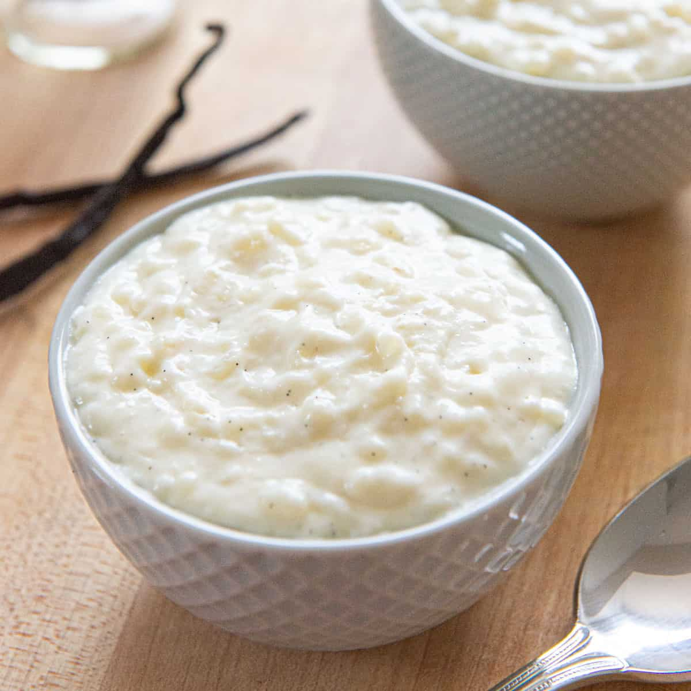

Rice pudding is a rich and creamy, comforting dessert with a homey, old-fashioned flavor. But maybe best of all, rice pudding is super easy to make. Rice, milk, and sugar, that's all it is -- with a beaten egg sometimes stirred in at the end of cooking to add extra richness. Yes, rice pudding is a triple threat! It can be flavored in any number of ways, is a snap to make, and is a great way to use up leftover rice.